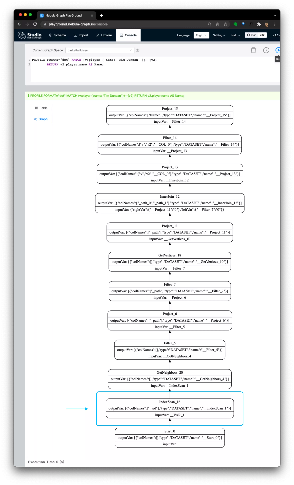

Nebula Index Explained

Nebula Graph Native Index explained, why
index not found? When should I use Nebula Index and full-text index?
The term of Nebula Graph Index is quite similar to the index in RDBMS, while, they are not the same. It’s noticed that when getting started with Nebula Graph, the index confused some of the users in first glance on the following
- What exactly Nebula Graph Index is.
- When I should use it.
- How it impacts the performance.
Today I’m gonna walk you through the index in Nebula Graph.
Let’s get started!
1 What exactly Nebula Graph Index is
TL;DR, Nebula Graph Index is only to be used to enable the graph query to be started from conditions on properties of vertices or edges, instead of vertexID.
It’s only used in a starting entry of a graph query. If a query is in pattern: (a->b->c, where c in condition-foobar) graph walk, due to the only filtering condition-foobar is on c, this query under the hood will be started to seek c, and then it walks through the reversed -> to b, finally to a. Thus, the Nebula Graph Index will be used and only be possbily used in seeking c, when condition-foobar is not like id(c) == "foobar" but c.property_x == "foobar".
1.1 Index is used only for starting point seek
We know that in RDBMS, an INDEX is to create a duplicated sorted DATA to enable QUERY with condition filtering on the sorted data, to accelerate the query in read and involves extra writes during the write.
Note: in RDBMS/Tabular DB, an INDEX on some columns means to create extra data that are sorted on those columns to make query with those columns’ condition to be scanned faster, rather than scanning from the original table data sorted based on the key only.
In Nebula Graph, the INDEX is to create a duplicated sorted Vertex/Edge PROP DATA to enable starting point seek of a QUERY(it’s a prerequisite rather than help accelerate it).
Not all of the queries relied on index, here are some examples, let’s call them pure-property-condition-start queries:
|
|
In both query 0 and query 1, the pattern is to “Find VID/EDGE only based on given the propertiy condtions”. On the contrary, the starting point are VertexID based instead in query 2 and query 3:
|
|
If we look into query 1 and query 3, which shared condition on vertex on tag:player are both { name: 'Tim Duncan' } though, they are differenciated in starting points:
For query 3 , the index is not required as the query will be started from known vertex ID in ["player101", "player102"] and thus:
- It’ll directly fetch vertex Data from
v2’s vertex IDs - then to GetNeighbors(): walk through edges of
v2, GetVertices() for next hop:vand filter based on property:name
For query 1 , the query has to start from v due to no known vertex IDs were provided:
- It’ll do IndexScan() first to find all vertices only with property condtion of
{ name: 'Tim Duncan' } - Then, GetNeighbors(): walk through edges of
v, GetVertices() for next hop:v2
Now, we could know the whole point that matters here is on whether to know the vertexID. And the above differences could be shown in their execution plans with PROFILE or EXPLAIN like the follow:
query 1, requires index(on tag: player), pure prop condition query as starting point |
query 3, no index required, query starting from known vertex IDs |
|---|---|
|  |
1.2 Why Nebula Graph index is enabler rather than an accelerater
Can’t those queries be done without indexes?
It’s possible in theory with full scan, but disabled without index.
The reason is Nebula Graph stores data in a distributed and graph-oriented way, the full scan of data was condiserred too expensive to be allowed.
Note: from v3.0, it’s possible to do TopN Scan without INDEX, where the
LIMIT <n>is used, this is different from the fullscan case(INDEX is a must), which will be explained later.
1 2 3 4# sample vertex MATCH (v:`team`) RETURN v LIMIT 3 # or sample edge MATCH ()-[e:`follow`]->() RETURN e LIMIT 3
1.3 Why starting point only
Index data is not used in terversal. It could confuse use to think of index is to sorting data based on properties, does it accelerate the terversal with property condition filtering? The answer is, no.
In Nebula Graph, the data is structured in a way to enable fast graph-terversal, which is already indexed/sorted on vertex ID(for both vertex and edge) in raw data, where terversal(underlying in storage, it’s calling GetNeighbors interface) of given vertex is cheap and fast due to the locality/stored continuously(pysically linked).
So in summary:
Nebula Graph Index is sorted prop data to find the starting vertex or edge on given pure prop conditions.
2 Facts on Nebula Graph Index
To understand more details/limitations/cost of Nebula, let’s reveal more on its design and here are some facts in short:
-
Index Data is stored and sharded together with Vertex Data
-
It’s Left Match based only: It’s RocksDB Prefix Scan under the hood
-
Effect on write and read path(to see its cost):
- Write Path: Extra Data written + Extra Read request introduced
- Read Path: RBO(Rule based optimization), Fan Out(to all shards)
-
Data Full Scan LIMIT Sample(not full scan) is supported without Index
-
LOOKUP ON t YIELD t.name | LIMIT 1 -
1 2MATCH (v:`player` { name: 'Tim Duncan' })-->(v2:`player`) \ RETURN v2.`player`.name AS Name LIMIT 3;
-
The key info can be seen from one of my sketch notes:

We should notice that only the left match is supported in pure-property-condition-start queries. For queries like wildcard or reguler-expression, Full-text Index/Search is to be used, where an external elastic search is integrated with nebula: please check Nebula Graph Full text index for more.
Within this sketch note, more highlights are:
-
It’s a Local Index Design
- The index is stored and shared locally together with the graph data.
- It’s sorting based on prop value, and the index search is underlying a rocksDB prefix scan, that’s why only left match is supported.
-
There is cost in the write path
- The index enables the RDBMS-like Prop Condition Based Query with cost in the write path including not only the extra write, but also, random read, to ensure the data consistency.
- Index Data write is done in a sync way
-
For Read path:
- In pure-property-condition-start queries, in GraphD, the index will be selected with Rule-based-optimization like this example, where, in a rule, the col2 to be sorted first is considered optimal with the condition: col2 equals ‘foo’.
- After the index was chosen, index-scan request will be fanout to storageD instances, and in the case of filters like LIMIT N, it will be pushed down to the storage side to reduce data payload.
- Note: it was not shown in the sketch but actually from v3.0, the nebula graph allows LIMIT N Sample Prop condition query like this w/o index, which is underlying pushing down the LIMIT filter to storage side.
Take aways:
- Use index only when we have to, as it’s costly in write cases and if limit N sample is the only needed case and it’s fast enough, we can use that instead.
- Index is left match
- composite index order matters, should be created carefully.
- for full-text search use case, use full-text index instead.
3 How to use the index
We should always refer to the documentation, and I just put some highlights on this here:
-
To create an index on a tag or edge type to specify a list of props in the order that we need.
CREATE INDEX
-
If an index was created after existing data was inserted, we need to trigger an index async rebuild job, as the index data will be written in sync way only when index is created.
REBUILD INDEX
-
We can see the index status after
REBUILD INDEXissued.SHOW INDEX STATUS
-
Queries levering index could be LOOKUP, and with the pipeline, in most cases we will do follow-up graph-walk queries like:
1 2 3 4 5LOOKUP ON `player` \ WHERE `player`.name == "Kobe Bryant"\ YIELD id(vertex) AS VertexID, properties(vertex).name AS name |\ GO FROM $-.VertexID OVER serve \ YIELD $-.name, properties(edge).start_year, properties(edge).end_year, properties($$).name; -
Or in MATCH query like this, under the hood, v will be searched on index and v2 will be walked by default graph data structure without involving index.
1 2MATCH (v:`player`{name:"Tim Duncan"})-->(v2:`player`) \ RETURN v2.`player`.name AS Name;
4 Recap
Finally, Let’s Recap
- INDEX is sorting PROP DATA to enable finding starting point on given PURE PROP CONDITION
- INDEX is not for Trevsal
- INDEX is left match, not for full-text search
- INDEX has cost on WRITE
- Remember to REBUILD after CREATE INDEX on existing data
Happy Graphing!
Feture image credit to Alina


{kind=link}
{kind=link}